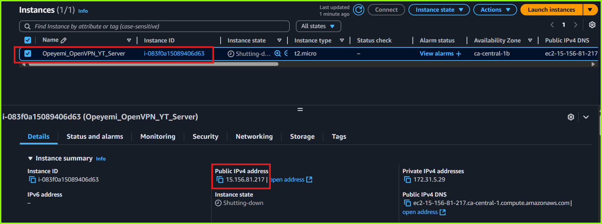

DIY Project - OpenVPN Access Server Setup Using Terraform¶
Setup and Host Your Own Free VPN Server on AWS Using Terraform and OpenVPN¶
In this mini-project, I will demonstrate how to setup and self-host a VPN server on AWS using terraform and OpenVPN Access Server.
Watch the Video - How To Create a Free Self-Hosted VPN Server on AWS using Terraform and OpenVPN
How to Create a Free Self-Hosted VPN Server on AWS using Terraform and OpenVPN
Introduction¶
Setting up a self-hosted VPN server can be a cost-effective and secure solution for personal or organizational needs. This documentation provides a step-by-step guide on using a Terraform configuration script to deploy an OpenVPN Access server on AWS.
With this guide, you'll learn how to configure the script, customize it for your requirements, and launch a fully functional VPN server in less than 5-minutes and ensures your internet traffic remains private and encrypted without been locked in a vpn subscription plan.
This VPN server is also "disposable", meaning, you can create and delete it anytime after use with just one command 
Pre-requisites¶
- AWS account (free tier account will work)
- Terraform installed on local machine (How to Install Terraform)
- OpenVPN Connect Client software installed on local machine (download from here)
- Your AWS access key ID and secret access key (learn how to get your AWS access keys here)
- AWS CLI installed and configured with your AWS access key ID and Secret access keys (learn more about AWS CLI here)
-
The OpenVPN-Terraform Setup Script (click the button below)
What this Terraform Configuration Script Does¶
This terraform configuration creates a fully functional, free and ready-to-use self-hosted OpenVPN Server in any chosen AWS region. The script perfomes the following operations:
- Creates a Ubuntu 22.04 EC2 instance and configures a fully functional OpenVPN Access Server on it
- Configures the server as a type t2-micro instance so that it can run within the AWS Free-tier plan (Learn more about the AWS free-tier plan here)
- Sets up and configures the VPN server with an IP address in the specified AWS region.
- Generates an AWS keypair file for optional SSH connection to the EC2 instance, downloads the file and saves it in the terraform working directory on your local machine. The chosen AWS region is appended to the name of the keypair file.
- Generates an OpenVPN User Profile file (*.ovpn) that will be used to authenticate and establish an encrypted VPN connection from your local machine to the VPN server. The OpenPVN User Profile file is also donwloaded and saved to the terraform working directory on your local machine.
- One command tear down that destroys and cleans up the whole infrastructure along with the locally created files (the keypair file and the *.ovpn user profile file)
How the Terraform Configuration Script works¶
Technical details about how the terraform script works is described below:
Click here to see details of how the OpenVPN Terraform config works under the hood
Each of the files in this terraform configuration module is explained below:
The ami.tf file
ami.tf
- Lines 6-9 filters the name of the ami "ubuntu/images/hvm-ssd/ubuntu-jammy-22.04-amd64-server-*"
- Lines 11-14 filters the virtualization type of the ami
- Line 16 filters the AWS account ID of the ami publisher - Canonical
This ami.tf is used to find the latest Ubuntu 22.04 AMI (Amazon Machine Image) from the AWS ami Catalog.
-
It creates a data source named "ubuntu" that searches for AMIs with these criteria:
-
Uses most_recent = true to get the latest version
-
Filters for Ubuntu 22.04 (Jammy Jellyfish) images using the name pattern
-
Ensures it's using HVM (Hardware Virtual Machine) virtualization
-
Only looks for images owned by Canonical (Ubuntu's publisher) using their AWS account ID (099720109477)
-
This prevents hardcoding a specific AMI ID into the script, which could become outdated. The AMI ID is then referenced elsewhere in the Terraform code using data.aws_ami.ubuntu.id
The OpenVPN_ec2.tf file
OpenVPN_ec2.tf
This is the main config file that sets up the OpenVPN server infrastructure.
-
It reates an EC2 instance for the OpenVPN server with the specified configurations (using Ubuntu AMI selected above)
-
Sets up a key pair for SSH access
-
Configures the instance metadata options so it can be queried by the user_data script
-
Creates and saves an RSA private key locally
-
Includes tags for resource management
-
Sets the connection profile name for the VPN server
-
Displays available AWS regions through a null resource and determines the selected region during execution
Each code section is explained breifly below:
aws_instance Resource
This resource defines the EC2 instance for the OpenVPN server.
ami: Uses the ID of a specific Ubuntu AMI fetched via a data source.instance_type: Sets the EC2 instance type, determined by a variable (var.OpenVPN_instance_type).vpc_security_group_ids: Attaches the instance to a specific security group (aws_security_group.openvpn_SG).user_data: Provides initialization commands for the instance via a template file. Custom variables, such asopenvpn_user, are passed to the template.key_name: Associates the instance with an SSH key pair created earlier.root_block_device: Defines the root storage for the instance, setting its size to 8 GB.metadata_options: Configures the EC2 metadata service to support both IMDSv1 and IMDSv2 for instance metadata retrieval.tags: Adds custom tags to the instance for identification, including project and region details.
locals Block
Defines reusable local variables and values for the configuration.
key_pair_name: Constructs a unique key name with a prefix and region.openvpn_user: Creates a unique username for OpenVPN based on the region.region_display: Formats a list of available AWS regions for display purposes.
tls_private_key Resource
Generates a 2048-bit RSA private key used to create an AWS key pair.
aws_key_pair Resource
Creates an SSH key pair in AWS.
key_name: Uses the locally defined key pair name.public_key: Sets the public key from the generated private key.tags: Adds metadata for the key pair, such as the project name and creation method.
local_file Resource
Stores the generated private key securely on the local machine.
content: Saves the private key in PEM format.filename: Names the file using the key pair name and.pemextension.file_permission: Sets restrictive permissions (0400) for security.
null_resource for Region Display
A helper resource to print available AWS regions to the console.
triggers: Ensures the resource runs every time by using the current timestamp.provisioner "local-exec": Executes a script that prints available AWS regions and the selected region's details.
The openvpn_userdata.tpl file
openvpn_userdata.tpl
This is the userdata script that is used to bootstrap the server immediately after it is provisioned by Terraform. It is configured as a template file so that terraform can interpolate the value of openvpn_user variable from the variables declared in the config file into the user_data script.
How it works:
-
Sets bash environment and error handling
-
Captures all the setup process in the log file
/var/log/setup_script.logso it can be referenced if there are errors -
Updates system packages
-
Retrieves instance metadata (FQDN and Public IP) from AWS metadata service which will be needed by the OpenVPN installatin script
-
Downloads the installation script from Angristan's GitHub repository and sets the executable permissions on the file
-
Runs the installation script configuration automatically without prompts using the "Public IP" and "FQDN" values queried from the instance metadata
-
Sets the Custom client name (from variable ${openvpn_user})
-
Moves the generated client profile (.ovpn file) to Ubuntu user's home directory
-
Sets the system hostname to "OpenVPN-Server"
Each section of the file is explained below:
Shebang and Setup
#!/bin/bash: Specifies the script should run using the Bash shell.set -e: Ensures the script exits immediately if any command fails, preventing incomplete setups.exec >> /var/log/setup_script.log 2>&1: Redirects all script output (standard and error) to a log file for debugging and reference.
Logging Initialization and Updates
echo "Initializing script...": Provides a visual indicator that the script has started.sudo apt update -y: Updates package lists to ensure the system has the latest available versions.
Retrieve and Display Instance Metadata
FQDN=$(curl -sS http://169.254.169.254/latest/meta-data/public-hostname): Retrieves the Fully Qualified Domain Name (FQDN) of the instance from AWS metadata.PUB_IP=$(curl -sS http://169.254.169.254/latest/meta-data/public-ipv4): Retrieves the public IPv4 address of the instance from AWS metadata.echo "$FQDN"&echo "$PUB_IP": Prints the FQDN and public IP to the console for verification.
Download and Prepare OpenVPN Installation Script
wget https://raw.githubusercontent.com/angristan/openvpn-install/master/openvpn-install.sh -O openvpn-install.sh: Downloads the OpenVPN installation script from Angristan’s GitHub repository.chmod +x openvpn-install.sh: Makes the script executable.
Install OpenVPN
sudo AUTO_INSTALL=y \: Enables automatic installation with predefined options.APPROVE_IP=$PUB_IP \: Uses the retrieved public IP for OpenVPN configuration.ENDPOINT=$FQDN \: Sets the FQDN as the server endpoint.CLIENT=${openvpn_user} \: Configures the OpenVPN client with a specified username../openvpn-install.sh: Executes the installation script.
Move User Configuration File
mv /root/${openvpn_user}.ovpn /home/ubuntu/${openvpn_user}.ovpn: Moves the generated client profile (.ovpnfile) to the default user’s home directory for easier access.
Post-Installation Messages and Cleanup
echo "Hurray! OpenVPN Installed successfully": Prints a success message to indicate completion.sudo hostnamectl set-hostname OpenVPN-Server: Changes the system’s hostname to "OpenVPN-Server" for easy identification.
The outputs.tf file
outputs.tf
The outputs.tf file defines values that will be displayed after Terraform completes its execution. In this specific file, it outputs:
The following values will be displayed:
-
Public IP address of the OpenVPN server
-
Instance ID of the server
-
Key pair name used for SSH access
-
Details on how to access the VPN server
-
Path to the private key file that was created
-
SSH connection string (ready to use command for connecting to the server)
-
Location of the downloaded OpenVPN profile (.ovpn file)
-
Next Steps Instructions
These outputs help users understand where important files are located and what steps to take next after the infrastructure is deployed.
The ovpn.tf file
ovpn.tf
The ovpn.tf file manages the retrieval of the OpenVPN configuration file from the remote VPN server and donwloads it in the terraform working directory. The main purpose of this file is to ensure you get the OpenVPN client configuration file automatically downloaded to your local machine once it's ready on the server.
Here’s a breakdown of each section of this file:
Resource Definition
null_resource "get_ovpn_config": A helper resource used to wait for the OpenVPN configuration file to be generated, then download it locally. This resource doesn't create infrastructure directly but adds automation to the deployment process.
Dependency and Trigger Configuration
depends_on = [aws_instance.OpenVPN_Server]: Ensures this resource executes only after the OpenVPN server instance is successfully created.triggers:instance_ip: Ensures the resource is re-applied if the public IP of the OpenVPN server changes.ovpn_file: Tracks the expected.ovpnconfiguration filename as a trigger, ensuring changes to this filename will trigger re-execution.
Remote Execution Provisioner
provisioner "remote-exec": Executes commands on the OpenVPN server to ensure the.ovpnconfiguration file is ready.
inline:
Contains the commands to:
while [ ! -f /home/ubuntu/... ]; do: Polls the server every 20 seconds, checking if the.ovpnfile exists.echo 'Waiting for OpenVPN config file...': Prints a message during the wait loop.echo 'OpenVPN config file is ready!': Signals the file is available.
connection: Defines SSH connection details:
type: Specifies SSH as the connection type.user: Specifies the user (ubuntu) to connect with.private_key: Uses the private key generated earlier for authentication.host: Specifies the public IP of the OpenVPN server instance.
Local Execution Provisioner
- First
local-execblock: Downloads the.ovpnfile to the local machine. scp: Securely copies the file from the OpenVPN server to the local directory.
Options:
-o StrictHostKeyChecking=no: Disables host key checking to avoid interactive prompts.-o UserKnownHostsFile=/dev/null: Prevents updates to the local known hosts file.-i: Specifies the SSH private key for authentication.
Cleanup on Resource Destruction
- Second
local-execblock: Deletes the downloaded*.ovpnfile when the resource is destroyed during the terraform cleanup phase. when = destroy: Ensures the command is only executed during the resource destruction phase.rm -f ./${self.triggers.ovpn_file}: Removes the file using the name stored in the triggers.
Overall Function
This file ensures that the OpenVPN profile configuration file is created on the server, securely downloads it to the local system, and removes it when no longer needed (when the terraform destroy command is run). It integrates waiting, remote command execution, and local file operations seamlessly within the Terraform workflow.
The provider.tf file
provider.tf
The file essentially sets up the foundational configuration sources and versions needed for Terraform to interact with AWS and to use other necessary providers for the OpenVPN deployment.
The securityGrp.tf file
securityGrp.tf
This configures the required security group profile for the OpenVPN server. It opens the required ports for ingress and egress and the neccesary port protocols (tcp and udp).
The sections of the securityGrp.tf file are explained breifly below:
Resource Definition
resource "aws_security_group" "openvpn_SG": Creates a security group in AWS to define network access rules for the OpenVPN server.
Security Group Naming and Description
name_prefix: Sets a prefix for the security group name, combining the project name (var.project_name) with_openvpn_SG_. AWS appends a unique identifier to the prefix.description: Provides a description for the security group, indicating its purpose (OpenVPN security).
Dynamic Ingress Rules for TCP Ports
dynamic "ingress" (first block):
for_each = var.openvpn_tcp_ports: Iterates over a map of TCP ports and descriptions provided in the variablevar.openvpn_tcp_ports.
content {}: Defines the content of each rule:
from_portandto_port: Sets the port range for the rule, using the key from the iteration (ingress.key).protocol = "tcp": Specifies that the rule applies to TCP traffic.cidr_blocks = ["0.0.0.0/0"]: Allows traffic from all IP addresses.description = ingress.value: Provides a description for the rule, using the value from the iteration.
Dynamic Ingress Rules for UDP Ports
dynamic "ingress" (second block):
- Similar to the first block, but applies to UDP traffic.
- Iterates over the variable
var.openvpn_udp_ports, which contains a map of UDP ports and their descriptions.
Egress Rules
egress block:
from_port = 0andto_port = 0: Allows all outbound traffic across all port ranges.protocol = "-1": Applies the rule to all protocols.cidr_blocks = ["0.0.0.0/0"]: Allows traffic to all IP addresses.
Overall Function
This security group:
- Dynamically creates ingress (inbound) rules for both TCP and UDP traffic based on user-defined ports and descriptions (
var.openvpn_tcp_portsandvar.openvpn_udp_ports). - Configures unrestricted egress (outbound) traffic to allow the OpenVPN server to communicate with any destination.
- Ensures that all rules are flexible and easy to manage via Terraform variables, making it adaptable for different use cases.
The terraform.tfvars file
terraform.tfvars
Here, values are assigned to all the declared variables in the config script. You can freely change any values here to customize the script for your own purpose
The variables.tf file
variables.tf
The variables.tf file is used to define variables that make the configuration more dynamic and reusable. By abstracting values into variables, I can easily customize the infrastructure without directly modifying the configuration files.
Setting the script options¶
The script allows you to set some options based on your use case. These are the available options you can set:
- project_name - This is used for labelling purposes only. It is appended to the resource tags
- OpenVPN_instance_type - This has been set to
t2-microso the setup remains within the AWS free-tier plan. You can change this to any suitable instance type but a t2-micro will server in most situations - openvpn_user - This is the username used to create the
*.ovpnprofile file on the VPN server. The profile name is displayed when you connect through the OpenVPN client. It is currently set to append the selected AWS region so you can easily know which region you are connected to. - selected_region - this option is set at runtime and it is required for the script to run. Here you select the AWS region where you want your server to be hosted. The region you select will determine where your VPN traffic is routed through. For example, if you select
ca-central-1, your VPN traffic will be routed through the AWS Canada Central IP address and as such your public IP address will read "Quebec, Montreal, Canada"

Public IP address showing Canada
The list of acceptable AWS regions are shown here
Running the script¶
Follow the "Quick Start Guide" below to provision and configure your OpenVPN server and to connect to your new VPN network.
Quick Start Guide¶
Click here for a quick start guide on setting up the OpenVPN Access Server
Clone the Repository¶
Create a folder on your local machine and clone the repository in the folder
Initialize the terraform configuration¶
From within the cloned directory, initialize the terraform configuration
Terraform Initialiaztion Command
Apply the Terraform Configuration¶
- When prompted, enter an AWS region from the list below and press enter. (e.g.
us-west-2) - This will be the AWS region where the VPN server and all resources will be hosted.

Terraform apply command
List of accepted AWS regions¶
- us-east-1 = N. Virginia
- us-east-2 = Ohio
- us-west-1 = N. California
- us-west-2 = Oregon
- af-south-1 = Cape Town
- ap-east-1 = Hong Kong
- ap-south-1 = Mumbai
- ap-southeast-1 = Singapore
- ap-southeast-2 = Sydney
- ap-southeast-3 = Jakarta
- ap-northeast-1 = Tokyo
- ap-northeast-2 = Seoul
- ap-northeast-3 = Osaka
- ca-central-1 = Canada Central
- eu-central-1 = Frankfurt
- eu-west-1 = Ireland
- eu-west-2 = London
- eu-west-3 = Paris
- eu-north-1 = Stockholm
- eu-south-1 = Milan
- eu-south-2 = Zurich
- me-south-1 = Bahrain
- me-central-1 = UAE
- sa-east-1 = São Paulo
Outputs¶
At the end of the terraform apply command, the script outputs the following details on the screen:
- The Public IP address of the VPN Server
- The instance-ID
- The name of the keypair created
- The path where the private key file was saved on your local machine
- SSH connection string that you can use to the VPN server
- The OpenVPN profile file that you will use to ssh into the VPN server
- Further steps to launch your VPN connection

Terraform Output Screen
Showing the OpenVPN server on the AWS EC2 Console 
AWS Console Showing the OpenVPN Server details
Connect to your VPN¶
- Download and install OpenVPN Connect client on your local machine
- Import the
*.ovpnfile into the OpenVPN cient appllication - Connect to your VPN network

OpenVPN Client Connected to the VPN
Testing your VPN Connection¶
One very simple way to check if you are actually connected to your new VPN network is to open your browser and check your public IP address. You can use websites like whatsmyip.com or simply search "what is my ip address" on Google to check your public IP address.
Public IP address showing Canada
When you are connected to your VPN server, your internet traffic will be routed through your VPN server and as such, only your VPN server IP address will be seen publicly, your local ISP assigned ip address will be hidden from the internet.
Cleanup¶
To delete the server and cleanup all resources that were created.
-
First disconnect the OpenVPN Connect Client
-
Then enter the command below to delete all locally created files and also delete the server and all other resources from your AWS account.
- This will terminate the EC2 instance and delete all resources created and also delete the files that were locally created in the terraform working directory i.e. the *.ovpn user profile and the keypair file that was created earlier
Terraform Destroy Command
Use Cases¶
This self-hosted OpenVPN solution offers flexibility, control, and enhanced security compared to commercial VPN services. Here are some possible use cases:
1. Secure Remote Access
- Corporate Network Access: Allow employees to securely connect to on-premises resources or internal systems.
- Remote Development: Enable developers to work on private servers or cloud environments without exposing them to the public internet.
2. Privacy and Anonymity
- Encrypt Internet Traffic: Protect personal or organizational internet traffic, especially when using public Wi-Fi.
- Location Masking: Access the internet as if from a specific location to bypass geolocation restrictions.
3. Secure Inter-Office Communication
- Branch Office Connectivity: Connect multiple office locations securely over a shared network.
- IoT Devices: Secure communication for IoT devices spread across different sites.
4. Personal Use
- Ad-Free Browsing: Avoid invasive tracking and ads by routing traffic through your onw self-hosted VPN server.
- Bypass ISP Throttling: Prevent internet service providers from throttling bandwidth for specific services.
5. Development and Testing
- Environment Testing: Simulate network environments for application development and QA testing.
- Access Restricted APIs: Connect securely to APIs or other restricted services during development.
6. Secure Cloud Resources
- Private Cloud Access: Connect securely to AWS resources without exposing them to the public internet.
- DevOps Pipelines: Ensure secure deployment pipelines that require private network connectivity.
7. Enhanced Security
- Multi-Layered Security: Combine a self-hosted VPN with firewalls or IDS/IPS systems to add another layer of protection.
- Self-Controlled Data: Prevent third-party logging or tracking of your internet activity.
8. Education and Research
- Bypass Censorship: Enable access to academic resources or restricted sites in regions with strict censorship.
- Research Anonymity: Conduct secure and private research online.
9. Cost Efficiency
- Avoiding Commercial VPN Costs: Reduce long-term expenses for secure connections, especially for teams or organizations.
- No User Limits: Create a solution tailored to your usage, avoiding per-user or bandwidth fees common with commercial VPNs.
10. Gaming and Media
- LAN Gaming: Create a virtual local area network for multiplayer gaming.
- Bypass Regional Blocks: Access region-restricted content like streaming services.
By usign this solution to host your own VPN, you gain complete control over configuration, logs, and data flow, making it an excellent choice for your specific use case.
Conclusion¶
Setting up a self-hosted VPN server using this Terraform configuration script is a straightforward and efficient way to enhance your network security and maintain control over your data. By following this documentation, you can deploy a robust OpenVPN server on AWS, customize it to your needs, and ensure private and secure internet access. This guide aims to empower you with the knowledge and tools to manage your own VPN server effectively. For any troubleshooting or further customization, explore the Terraform and OpenVPN documentation for advanced insights and solutions.